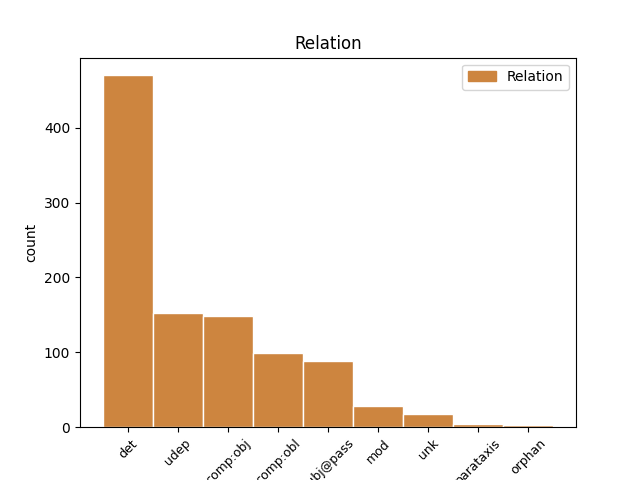
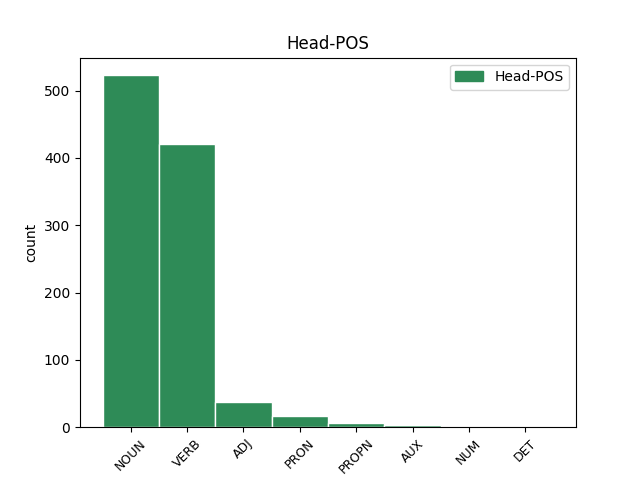
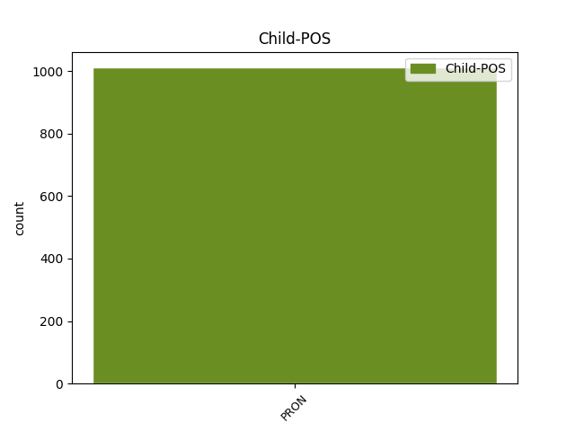

Distribution of features within this leaf



Agreement Rules sorted by frequency.
- When the dependent token is the subject(subj@pass) of the head token, and the dependent token is PRON.
1 Vietā _ _ _ _ 0 _ _ _
2 , _ _ _ _ 0 _ _ _
3 kur _ _ _ _ 0 _ _ _
4 straume _ _ _ _ 0 _ _ _
5 pāriet _ _ _ _ 0 _ _ _
6 no _ _ _ _ 0 _ _ _
7 līkuma _ _ _ _ 0 _ _ _
8 , _ _ _ _ 0 _ _ _
9 kas _ _ _ _ 0 _ _ _
10 vērsts _ _ _ _ 0 _ _ _
11 uz _ _ _ _ 0 _ _ _
12 vienu _ _ _ _ 0 _ _ _
13 pusi _ _ _ _ 0 _ _ _
14 , _ _ _ _ 0 _ _ _
15 līkumā _ _ _ _ 0 _ _ _
16 , _ _ _ _ 0 _ _ _
17 kas kas PRON pr000nn Case=Nom|PronType=Rel 18 subj@pass _ LvtbNodeId=a-z85-p35s4w17
18 vērsts vērst VERB vmnpdmsnpsnpn Aspect=Perf|Case=Nom|Definite=Ind|Degree=Pos|Gender=Masc|Number=Sing|Polarity=Pos|Tense=Past|VerbForm=Part|Voice=Pass 0 _ _ _
19 uz _ _ _ _ 0 _ _ _
20 pretējo _ _ _ _ 0 _ _ _
21 pusi _ _ _ _ 0 _ _ _
22 , _ _ _ _ 0 _ _ _
23 šķērscirkulācijas _ _ _ _ 0 _ _ _
24 pārtrūkst _ _ _ _ 0 _ _ _
25 un _ _ _ _ 0 _ _ _
26 notiek _ _ _ _ 0 _ _ _
27 pastiprināta _ _ _ _ 0 _ _ _
28 sanešu _ _ _ _ 0 _ _ _
29 izgulsnēšanās _ _ _ _ 0 _ _ _
30 ( _ _ _ _ 0 _ _ _
31 Zīverts _ _ _ _ 0 _ _ _
32 , _ _ _ _ 0 _ _ _
33 1995 _ _ _ _ 0 _ _ _
34 ) _ _ _ _ 0 _ _ _
35 . _ _ _ _ 0 _ _ _
1 Kultūras _ _ _ _ 0 _ _ _
2 vardarbība _ _ _ _ 0 _ _ _
3 ir _ _ _ _ 0 _ _ _
4 pārstāvēta _ _ _ _ 0 _ _ _
5 tajos _ _ _ _ 0 _ _ _
6 kultūras _ _ _ _ 0 _ _ _
7 aspektos _ _ _ _ 0 _ _ _
8 ( _ _ _ _ 0 _ _ _
9 mūsu mēs PRON pp10pgn Case=Gen|Number=Plur|Person=1|PronType=Prs 10 det _ LvtbNodeId=a-z99-p16s4w9
10 eksistences eksistence NOUN ncfsg5 Case=Gen|Gender=Fem|Number=Sing 0 _ _ _
11 simboliskajā _ _ _ _ 0 _ _ _
12 sfērā _ _ _ _ 0 _ _ _
13 : _ _ _ _ 0 _ _ _
14 reliģija _ _ _ _ 0 _ _ _
15 , _ _ _ _ 0 _ _ _
16 ideoloģija _ _ _ _ 0 _ _ _
17 , _ _ _ _ 0 _ _ _
18 valoda _ _ _ _ 0 _ _ _
19 , _ _ _ _ 0 _ _ _
20 māksla _ _ _ _ 0 _ _ _
21 , _ _ _ _ 0 _ _ _
22 empīriskā _ _ _ _ 0 _ _ _
23 zinātne _ _ _ _ 0 _ _ _
24 , _ _ _ _ 0 _ _ _
25 formālā _ _ _ _ 0 _ _ _
26 zinātne _ _ _ _ 0 _ _ _
27 ) _ _ _ _ 0 _ _ _
28 , _ _ _ _ 0 _ _ _
29 kas _ _ _ _ 0 _ _ _
30 tiek _ _ _ _ 0 _ _ _
31 lietota _ _ _ _ 0 _ _ _
32 , _ _ _ _ 0 _ _ _
33 lai _ _ _ _ 0 _ _ _
34 attaisnotu _ _ _ _ 0 _ _ _
35 vai _ _ _ _ 0 _ _ _
36 leģitimētu _ _ _ _ 0 _ _ _
37 tiešo _ _ _ _ 0 _ _ _
38 vai _ _ _ _ 0 _ _ _
39 strukturālo _ _ _ _ 0 _ _ _
40 vardarbību _ _ _ _ 0 _ _ _
41 . _ _ _ _ 0 _ _ _
1 Tiek _ _ _ _ 0 _ _ _
2 uzsvērts _ _ _ _ 0 _ _ _
3 , _ _ _ _ 0 _ _ _
4 ka _ _ _ _ 0 _ _ _
5 vislielākie _ _ _ _ 0 _ _ _
6 stereotipu _ _ _ _ 0 _ _ _
7 draudi _ _ _ _ 0 _ _ _
8 rodami _ _ _ _ 0 _ _ _
9 nevis _ _ _ _ 0 _ _ _
10 tajos tas PRON pd3mpln Case=Loc|Gender=Masc|Number=Plur|Person=3|PronType=Dem 12 udep _ LvtbNodeId=a-z89-p104s4w10
11 ietvertajos _ _ _ _ 0 _ _ _
12 maldos maldi NOUN ncmdl1 Case=Loc|Gender=Masc|Number=Ptan 0 _ _ _
13 , _ _ _ _ 0 _ _ _
14 bet _ _ _ _ 0 _ _ _
15 gan _ _ _ _ 0 _ _ _
16 rīcībā _ _ _ _ 0 _ _ _
17 , _ _ _ _ 0 _ _ _
18 kas _ _ _ _ 0 _ _ _
19 tiem _ _ _ _ 0 _ _ _
20 seko _ _ _ _ 0 _ _ _
21 . _ _ _ _ 0 _ _ _
1 No _ _ _ _ 0 _ _ _
2 23 _ _ _ _ 0 _ _ _
3 OECD _ _ _ _ 0 _ _ _
4 valstīm _ _ _ _ 0 _ _ _
5 , _ _ _ _ 0 _ _ _
6 par _ _ _ _ 0 _ _ _
7 kurām _ _ _ _ 0 _ _ _
8 informācija _ _ _ _ 0 _ _ _
9 ir _ _ _ _ 0 _ _ _
10 norādīta _ _ _ _ 0 _ _ _
11 abus _ _ _ _ 0 _ _ _
12 gadus _ _ _ _ 0 _ _ _
13 , _ _ _ _ 0 _ _ _
14 tikai _ _ _ _ 0 _ _ _
15 Meksikas _ _ _ _ 0 _ _ _
16 sākumizglītībā _ _ _ _ 0 _ _ _
17 skolēnu _ _ _ _ 0 _ _ _
18 skaita _ _ _ _ 0 _ _ _
19 un _ _ _ _ 0 _ _ _
20 skolotāju _ _ _ _ 0 _ _ _
21 skaita _ _ _ _ 0 _ _ _
22 attiecība _ _ _ _ 0 _ _ _
23 ir _ _ _ _ 0 _ _ _
24 pieaugusi _ _ _ _ 0 _ _ _
25 un _ _ _ _ 0 _ _ _
26 tikai _ _ _ _ 0 _ _ _
27 Francijā _ _ _ _ 0 _ _ _
28 un _ _ _ _ 0 _ _ _
29 Ungārijā _ _ _ _ 0 _ _ _
30 tā tā PRON pd3fsnn Case=Nom|Gender=Fem|Number=Sing|Person=3|PronType=Dem 31 unk _ LvtbNodeId=a-z46-p7s8w30
31 palikusi palikt VERB vmnpdfsnasnpn Aspect=Perf|Case=Nom|Definite=Ind|Degree=Pos|Gender=Fem|Number=Sing|Polarity=Pos|Tense=Past|VerbForm=Part|Voice=Act 0 _ _ _
32 praktiski _ _ _ _ 0 _ _ _
33 iepriekšējā _ _ _ _ 0 _ _ _
34 līmenī _ _ _ _ 0 _ _ _
35 . _ _ _ _ 0 _ _ _
1 Tomēr _ _ _ _ 0 _ _ _
2 skolēnu _ _ _ _ 0 _ _ _
3 un _ _ _ _ 0 _ _ _
4 skolotāju _ _ _ _ 0 _ _ _
5 skaita _ _ _ _ 0 _ _ _
6 attiecība attiecība NOUN ncfsn4 Case=Nom|Gender=Fem|Number=Sing 0 _ _ _
7 pati pati PRON pg0fsnn Case=Nom|Gender=Fem|Number=Sing|PronType=Tot 6 mod _ LvtbNodeId=a-z46-p8s1w7
8 par _ _ _ _ 0 _ _ _
9 sevi _ _ _ _ 0 _ _ _
10 ir _ _ _ _ 0 _ _ _
11 atkarīga _ _ _ _ 0 _ _ _
12 no _ _ _ _ 0 _ _ _
13 dažādiem _ _ _ _ 0 _ _ _
14 faktoriem _ _ _ _ 0 _ _ _
15 . _ _ _ _ 0 _ _ _
1 Tāpat _ _ _ _ 0 _ _ _
2 vardarbības _ _ _ _ 0 _ _ _
3 raksturojumam _ _ _ _ 0 _ _ _
4 jābūt _ _ _ _ 0 _ _ _
5 kultūrspecifiskam _ _ _ _ 0 _ _ _
6 , _ _ _ _ 0 _ _ _
7 jo _ _ _ _ 0 _ _ _
8 nepieciešams _ _ _ _ 0 _ _ _
9 aprakstīt _ _ _ _ 0 _ _ _
10 vardarbību _ _ _ _ 0 _ _ _
11 , _ _ _ _ 0 _ _ _
12 kas kas PRON pr000nn Case=Nom|PronType=Rel 14 comp:obl _ LvtbNodeId=a-z99-p16s9w12
13 būtu _ _ _ _ 0 _ _ _
14 piesaistīta piesaistīt VERB vmnpdfsnpsnpn Aspect=Perf|Case=Nom|Definite=Ind|Degree=Pos|Gender=Fem|Number=Sing|Polarity=Pos|Tense=Past|VerbForm=Part|Voice=Pass 0 _ _ _
15 konkrētai _ _ _ _ 0 _ _ _
16 dzīves _ _ _ _ 0 _ _ _
17 telpai _ _ _ _ 0 _ _ _
18 un _ _ _ _ 0 _ _ _
19 laikam _ _ _ _ 0 _ _ _
20 . _ _ _ _ 0 _ _ _
1 Lai _ _ _ _ 0 _ _ _
2 aktivitātes _ _ _ _ 0 _ _ _
3 un _ _ _ _ 0 _ _ _
4 tās tā PRON pd3fpan Case=Acc|Gender=Fem|Number=Plur|Person=3|PronType=Dem 5 comp:obj _ LvtbNodeId=a-z98-p30s1w4
5 identificējošos identificēt VERB vmnpdmpaapypn Aspect=Imp|Case=Acc|Definite=Def|Degree=Pos|Gender=Masc|Number=Plur|Polarity=Pos|Tense=Pres|VerbForm=Part|Voice=Act 0 _ _ _
6 notikumus _ _ _ _ 0 _ _ _
7 varētu _ _ _ _ 0 _ _ _
8 sasaistīt _ _ _ _ 0 _ _ _
9 ar _ _ _ _ 0 _ _ _
10 konkrētu _ _ _ _ 0 _ _ _
11 procesa _ _ _ _ 0 _ _ _
12 instanci _ _ _ _ 0 _ _ _
13 , _ _ _ _ 0 _ _ _
14 valodā _ _ _ _ 0 _ _ _
15 ir _ _ _ _ 0 _ _ _
16 ieviesti _ _ _ _ 0 _ _ _
17 mainīgie _ _ _ _ 0 _ _ _
18 . _ _ _ _ 0 _ _ _
1 Un _ _ _ _ 0 _ _ _
2 meitenīte meitenīte NOUN ncfsn5 Case=Nom|Gender=Fem|Number=Sing 0 _ _ _
3 tik _ _ _ _ 0 _ _ _
4 pārsteigta _ _ _ _ 0 _ _ _
5 : _ _ _ _ 0 _ _ _
6 " _ _ _ _ 0 _ _ _
7 Onkulīt _ _ _ _ 0 _ _ _
8 , _ _ _ _ 0 _ _ _
9 es es PRON pp10snn Case=Nom|Number=Sing|Person=1|PronType=Prs 2 parataxis _ LvtbNodeId=a-p5305-p3s4w9
10 ne _ _ _ _ 0 _ _ _
11 pie _ _ _ _ 0 _ _ _
12 jums _ _ _ _ 0 _ _ _
13 pēc _ _ _ _ 0 _ _ _
14 autogrāfa _ _ _ _ 0 _ _ _
15 , _ _ _ _ 0 _ _ _
16 bet _ _ _ _ 0 _ _ _
17 pie _ _ _ _ 0 _ _ _
18 puišiem _ _ _ _ 0 _ _ _
19 . _ _ _ _ 0 _ _ _
20 " _ _ _ _ 0 _ _ _
Disagree Examples:
1 Viņa _ _ _ _ 0 _ _ _
2 , _ _ _ _ 0 _ _ _
3 tāpat _ _ _ _ 0 _ _ _
4 kā _ _ _ _ 0 _ _ _
5 viņas viņa PRON pp3fsgn Case=Gen|Gender=Fem|Number=Sing|Person=3|PronType=Prs 6 det _ LvtbNodeId=a-c15-p10s2w5
6 vīrs vīrs NOUN ncmsn1 Case=Nom|Gender=Masc|Number=Sing 0 _ _ _
7 Zevs _ _ _ _ 0 _ _ _
8 , _ _ _ _ 0 _ _ _
9 ir _ _ _ _ 0 _ _ _
10 pavēlniece _ _ _ _ 0 _ _ _
11 pār _ _ _ _ 0 _ _ _
12 pērkoniem _ _ _ _ 0 _ _ _
13 un _ _ _ _ 0 _ _ _
14 zibeņiem _ _ _ _ 0 _ _ _
15 ; _ _ _ _ 0 _ _ _
16 paklausot _ _ _ _ 0 _ _ _
17 viņas _ _ _ _ 0 _ _ _
18 vārdam _ _ _ _ 0 _ _ _
19 , _ _ _ _ 0 _ _ _
20 tumšo _ _ _ _ 0 _ _ _
21 lietus _ _ _ _ 0 _ _ _
22 mākoņi _ _ _ _ 0 _ _ _
23 klāj _ _ _ _ 0 _ _ _
24 debesis _ _ _ _ 0 _ _ _
25 , _ _ _ _ 0 _ _ _
26 un _ _ _ _ 0 _ _ _
27 viņas _ _ _ _ 0 _ _ _
28 rokas _ _ _ _ 0 _ _ _
29 mājiens _ _ _ _ 0 _ _ _
30 rada _ _ _ _ 0 _ _ _
31 drausmīgas _ _ _ _ 0 _ _ _
32 vētras _ _ _ _ 0 _ _ _
33 . _ _ _ _ 0 _ _ _
1 Viņa _ _ _ _ 0 _ _ _
2 , _ _ _ _ 0 _ _ _
3 tāpat _ _ _ _ 0 _ _ _
4 kā _ _ _ _ 0 _ _ _
5 viņas _ _ _ _ 0 _ _ _
6 vīrs _ _ _ _ 0 _ _ _
7 Zevs _ _ _ _ 0 _ _ _
8 , _ _ _ _ 0 _ _ _
9 ir _ _ _ _ 0 _ _ _
10 pavēlniece _ _ _ _ 0 _ _ _
11 pār _ _ _ _ 0 _ _ _
12 pērkoniem _ _ _ _ 0 _ _ _
13 un _ _ _ _ 0 _ _ _
14 zibeņiem _ _ _ _ 0 _ _ _
15 ; _ _ _ _ 0 _ _ _
16 paklausot _ _ _ _ 0 _ _ _
17 viņas viņa PRON pp3fsgn Case=Gen|Gender=Fem|Number=Sing|Person=3|PronType=Prs 18 det _ LvtbNodeId=a-c15-p10s2w17
18 vārdam vārds NOUN ncmsd1 Case=Dat|Gender=Masc|Number=Sing 0 _ _ _
19 , _ _ _ _ 0 _ _ _
20 tumšo _ _ _ _ 0 _ _ _
21 lietus _ _ _ _ 0 _ _ _
22 mākoņi _ _ _ _ 0 _ _ _
23 klāj _ _ _ _ 0 _ _ _
24 debesis _ _ _ _ 0 _ _ _
25 , _ _ _ _ 0 _ _ _
26 un _ _ _ _ 0 _ _ _
27 viņas _ _ _ _ 0 _ _ _
28 rokas _ _ _ _ 0 _ _ _
29 mājiens _ _ _ _ 0 _ _ _
30 rada _ _ _ _ 0 _ _ _
31 drausmīgas _ _ _ _ 0 _ _ _
32 vētras _ _ _ _ 0 _ _ _
33 . _ _ _ _ 0 _ _ _
1 Daiļa _ _ _ _ 0 _ _ _
2 ir _ _ _ _ 0 _ _ _
3 diženā _ _ _ _ 0 _ _ _
4 Hēra _ _ _ _ 0 _ _ _
5 - _ _ _ _ 0 _ _ _
6 lielām _ _ _ _ 0 _ _ _
7 acīm _ _ _ _ 0 _ _ _
8 , _ _ _ _ 0 _ _ _
9 lillijbaltām _ _ _ _ 0 _ _ _
10 rokām _ _ _ _ 0 _ _ _
11 , _ _ _ _ 0 _ _ _
12 ar _ _ _ _ 0 _ _ _
13 vainagu _ _ _ _ 0 _ _ _
14 uz _ _ _ _ 0 _ _ _
15 brīnišķīgajām _ _ _ _ 0 _ _ _
16 , _ _ _ _ 0 _ _ _
17 viļņainajām _ _ _ _ 0 _ _ _
18 cirtām _ _ _ _ 0 _ _ _
19 ; _ _ _ _ 0 _ _ _
20 valdonīgi _ _ _ _ 0 _ _ _
21 , _ _ _ _ 0 _ _ _
22 mierīgi _ _ _ _ 0 _ _ _
23 un _ _ _ _ 0 _ _ _
24 majestātiski _ _ _ _ 0 _ _ _
25 mirdz _ _ _ _ 0 _ _ _
26 viņas viņa PRON pp3fsgn Case=Gen|Gender=Fem|Number=Sing|Person=3|PronType=Prs 27 det _ LvtbNodeId=a-c15-p10s3w26
27 acis acs NOUN ncfpn6 Case=Nom|Gender=Fem|Number=Plur 0 _ _ _
28 . _ _ _ _ 0 _ _ _
1 Psihologi _ _ _ _ 0 _ _ _
2 pierādījuši _ _ _ _ 0 _ _ _
3 , _ _ _ _ 0 _ _ _
4 ka _ _ _ _ 0 _ _ _
5 tas _ _ _ _ 0 _ _ _
6 , _ _ _ _ 0 _ _ _
7 ko _ _ _ _ 0 _ _ _
8 apkārtējie _ _ _ _ 0 _ _ _
9 cilvēki _ _ _ _ 0 _ _ _
10 domā _ _ _ _ 0 _ _ _
11 par _ _ _ _ 0 _ _ _
12 mums _ _ _ _ 0 _ _ _
13 , _ _ _ _ 0 _ _ _
14 ļoti _ _ _ _ 0 _ _ _
15 ietekmē _ _ _ _ 0 _ _ _
16 mūsu mēs PRON pp10pgn Case=Gen|Number=Plur|Person=1|PronType=Prs 17 det _ LvtbNodeId=a-c17-p37s1w16
17 pašnovērtējumu pašnovērtējums NOUN ncmsa1 Case=Acc|Gender=Masc|Number=Sing 0 _ _ _
18 un _ _ _ _ 0 _ _ _
19 uzvedību _ _ _ _ 0 _ _ _
20 . _ _ _ _ 0 _ _ _
1 Arī _ _ _ _ 0 _ _ _
2 datu _ _ _ _ 0 _ _ _
3 slēpēji _ _ _ _ 0 _ _ _
4 var _ _ _ _ 0 _ _ _
5 pilnveidot _ _ _ _ 0 _ _ _
6 pēdējo _ _ _ _ 0 _ _ _
7 bitu _ _ _ _ 0 _ _ _
8 aizpildīšanas _ _ _ _ 0 _ _ _
9 paņēmienus _ _ _ _ 0 _ _ _
10 , _ _ _ _ 0 _ _ _
11 izmantojot _ _ _ _ 0 _ _ _
12 trokšņus _ _ _ _ 0 _ _ _
13 , _ _ _ _ 0 _ _ _
14 izvēloties _ _ _ _ 0 _ _ _
15 piemērotāko _ _ _ _ 0 _ _ _
16 konteinerfailu _ _ _ _ 0 _ _ _
17 , _ _ _ _ 0 _ _ _
18 piemēram _ _ _ _ 0 _ _ _
19 , _ _ _ _ 0 _ _ _
20 melnbaltu _ _ _ _ 0 _ _ _
21 raibu _ _ _ _ 0 _ _ _
22 attēlu _ _ _ _ 0 _ _ _
23 , _ _ _ _ 0 _ _ _
24 kurā kura PRON pr0fsln Case=Loc|Gender=Fem|Number=Sing|PronType=Rel 25 udep _ LvtbNodeId=a-c21-p20s7w24
25 attēlota attēlot VERB vmnpdfsnpsnpn Aspect=Perf|Case=Nom|Definite=Ind|Degree=Pos|Gender=Fem|Number=Sing|Polarity=Pos|Tense=Past|VerbForm=Part|Voice=Pass 0 _ _ _
26 meža _ _ _ _ 0 _ _ _
27 ainava _ _ _ _ 0 _ _ _
28 . _ _ _ _ 0 _ _ _